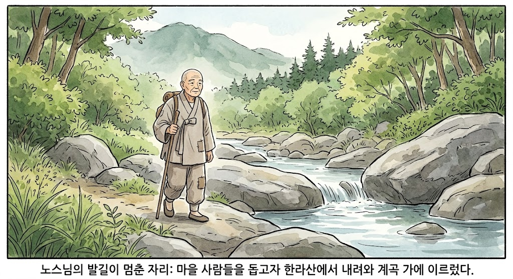
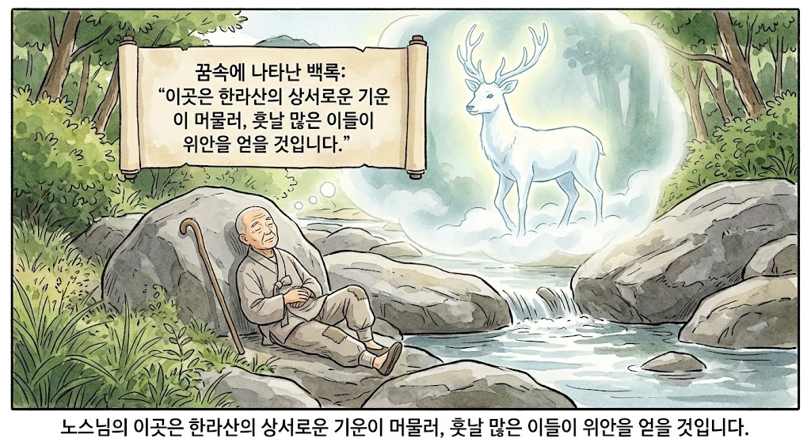
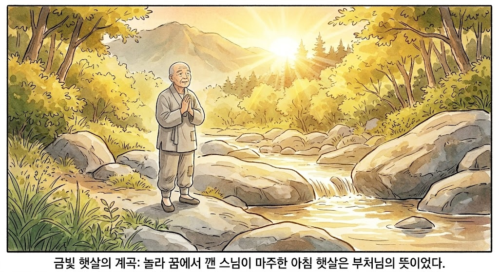
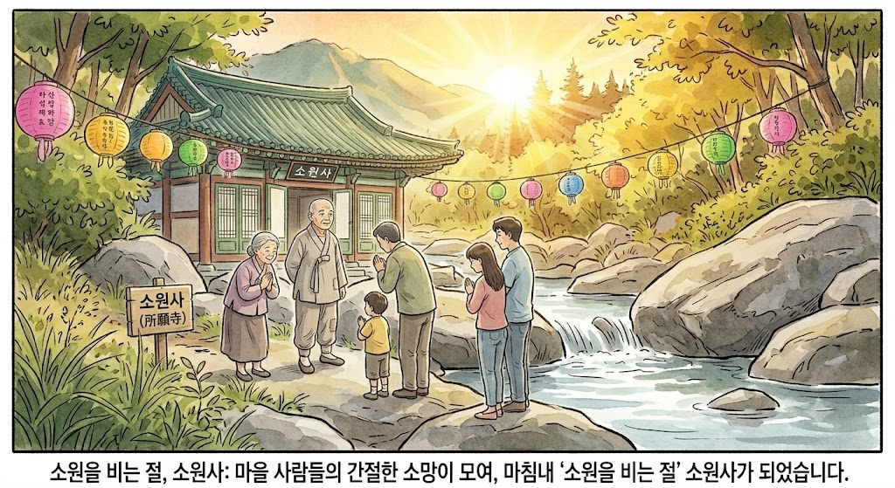

Origin Legend
소원사 창건 이야기
전해 내려오는 아름다운 전설 속에 탄생한 소원사의 기원과 이름에 얽힌 이야기입니다.
노스님의 발길이 멈춘 자리
아주 먼 옛날, 한라산에서 홀로 정진하시던 수행 깊은 노스님이 계셨습니다. 스님은 산에서 내려와 마을 사람들의 삶을 돕고 상처 입은 마음을 보살피며 참된 수행을 실천하고자 들판을 지나던 중, 제주시 오등동의 한 계곡 가에 이르렀습니다.

꿈속에 나타난 백록(白鹿)
유난히 기운이 온화한 계곡 너럭바위에서 잠시 쉬던 노스님은 깊은 꿈을 꾸었습니다. 꿈속에서 눈부시게 하얀 사슴 한 마리가 한라산 자락에서 걸어 내려와 스님 앞에 서서 맑고 청아한 목소리로 말했습니다.
"이곳은 한라산의 상서로운 기운이 내려와 물과 만나는 자리입니다. 산의 기운이 머물고, 훗날 수많은 이들이 찾아와 저마다 마음의 소원을 내려놓고 위안을 얻을 것입니다."

금빛 햇살의 계곡
놀라 꿈에서 깬 스님이 바라본 동쪽 하늘에는 아침 해가 떠올라 한라산 정상에서 시작된 햇빛이 계곡을 황금빛으로 밝히고 있었습니다. 스님은 이를 부처님의 뜻으로 여겨 조용히 합장하고 기도를 올릴 작은 돌단을 쌓았습니다.

소원을 비는 절, 소원사
스님과 함께 이곳에서 정성스럽게 기도한 마을 사람들은 걱정거리가 눈 녹듯 사라지고, 오랫동안 바라던 소망들이 성취되는 영험함을 겪었습니다. 자연스레 소문이 나며 사람들은 이곳을 '소원을 비는 절'이라 불러 오늘날의 소원사(所願寺)가 되었습니다.
